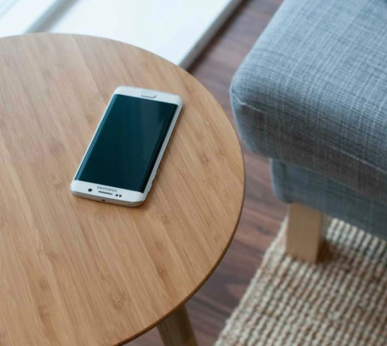
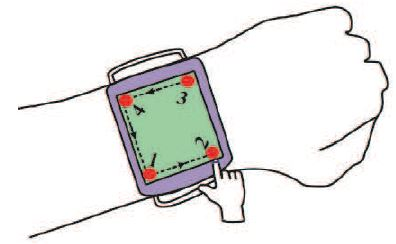

About Me
Hi! I am a PhD student at POTIOC Team, Inria Bordeaux. Before that, I received MS (By Research) from the Dept. of Computer Science and Engineering at IIT Kharagpur. The topic of my MS dissertation was Interactions with Smartphones and Smartwatches: Context-Awareness, Text Entry Interfaces, and Input Beyond Touch. I obtained my B.Tech in Information Technology from West Bengal University of Technology, Kolkata.
My area of research interest is Human Computer Interaction (HCI), particularly input and interaction techniques.
Professional Experience
● Summer Intern | Samsung R&D Institute Bangalore | Internet of Things (IoT) Division (June '16 - Jan '17) | PDF
● Summer Intern | Xerox Research Center India, Bangalore | Distributed and Mobile Computing Group (May '15 - July '15)
● Project Trainee | ISI Kolkata | CVPR Unit (July '12 - Dec '12)
Awards and Fellowships
● Received travel grant from Microsoft Research India to attend CHI 2016.
● Senior Research Fellowship from SRIC-IIT Kharagpur, 2013 - 2014.
Publications
 Rajkumar Darbar, Joan Sol Roo, Thibault Lainé, Martin Hachet, DroneSAR: Extending Physical Spaces in Spatial Augmented Reality using Projection on a Drone. In Proceedings of the 18th ACM International Conference on Mobile and Ubiquitous Multimedia (MUM 2019), 26 - 29 November, 2019, Pisa, Italy. PDF | Video | PPT
Rajkumar Darbar, Joan Sol Roo, Thibault Lainé, Martin Hachet, DroneSAR: Extending Physical Spaces in Spatial Augmented Reality using Projection on a Drone. In Proceedings of the 18th ACM International Conference on Mobile and Ubiquitous Multimedia (MUM 2019), 26 - 29 November, 2019, Pisa, Italy. PDF | Video | PPT
 Rajkumar Darbar, Prasanta Kr. Sen, Debasis Samanta, PressTact: Side Pressure-Based Input for Smartwatch Interaction. In Proceedings of the 34th ACM Conference on Human Factors in Computing Systems (CHI 2016), 7 - 12 May, 2016, San Jose, CA, USA. PDF | Video
Rajkumar Darbar, Prasanta Kr. Sen, Debasis Samanta, PressTact: Side Pressure-Based Input for Smartwatch Interaction. In Proceedings of the 34th ACM Conference on Human Factors in Computing Systems (CHI 2016), 7 - 12 May, 2016, San Jose, CA, USA. PDF | Video
 Rajkumar Darbar, Debasis Samanta, SurfaceSense: Smartphone Can Recognize Where It Is Kept. In Proc. of the 7th ACM Int. Conf. on Human Computer Interaction (IndiaHCI 2015), 17 - 19 Dec, 2015, IIT Guwahati, India. PDF
 Rajkumar Darbar, Prasanta Kr. Sen, Punyashlok Dash, Debasis Samanta, Using Hall Effect Sensors for 3D space Text Entry on Smartwatches. In Proc. of the 7th IEEE Int. Conf. on Intelligent Human Computer Interaction (IHCI 2015), 14 - 16 Dec, 2015, IIIT Allahabad, India. PDF | Video